DeepSeekMath：推动开放语言模型数学推理的极限
论文发布日期
作者： Zhihong Shao、Peiyi Wang、Qihao Zhu、Runxin Xu、Junxiao Song、Xiao Bi、Haowei Zhang、Mingchuan Zhang、Y.K. Li、Y. Wu、Daya Guo
机构： DeepSeek-AI；清华大学；北京大学
论文版本： arXiv:2402.03300v3，2024 年 4 月 27 日
代码： https://github.com/deepseek-ai/DeepSeek-Math
译文说明： 本译文按原论文内容顺序逐段编排，标题、正文、公式说明及图表说明均译为中文；模型名、数据集名与通行技术缩写保留原写法。表格、流程图、算法、参考文献和附录推导均以对应整页截图保留，并置于相关正文附近。
摘要
数学推理具有复杂且结构化的性质，对语言模型构成重大挑战。本文介绍 DeepSeekMath 7B：从 DeepSeek-Coder-Base-v1.5 7B 出发，使用来自 Common Crawl 的 1200 亿数学相关词元，并混合自然语言与代码数据继续预训练。DeepSeekMath 7B 不依赖外部工具或投票技术，就在竞赛级 MATH 基准上达到 51.7%，接近 Gemini-Ultra 与 GPT-4；对 64 个样本执行自洽投票后可达到 60.9%。其数学推理能力来自两个关键因素：第一，通过精心设计的数据选择流水线充分挖掘公开网页数据的潜力；第二，提出组相对策略优化（GRPO），这是近端策略优化（PPO）的一个变体，在增强数学推理的同时优化 PPO 的内存占用。
图 1：开源模型在竞赛级 MATH 基准上的 Top-1 准确率。 所有结果都不使用外部工具和投票技术。
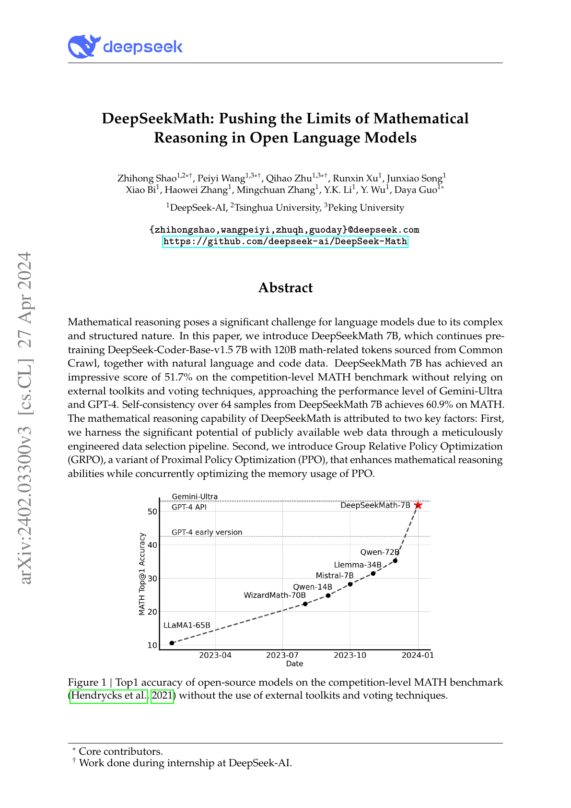
1 引言
大型语言模型已经彻底改变人工智能处理数学推理的方式，并推动定量推理基准与几何推理基准取得显著进步。它们还成为协助人类解决复杂数学问题的重要工具。然而，GPT-4、Gemini-Ultra 等前沿模型没有公开，当前可用的开源模型性能明显落后。
本文介绍领域专用语言模型 DeepSeekMath。它的数学能力显著超过开源模型，并在学术基准上接近 GPT-4。为此，我们构建 DeepSeekMath Corpus：一个包含 1200 亿数学词元的大规模高质量预训练语料。数据通过基于 fastText 的分类器从 Common Crawl 中提取。第一轮以 OpenWebMath 样本为正例、各种其他网页为负例训练分类器，再用它从 Common Crawl 挖掘更多正例，并经人工标注改进；随后使用增强数据更新分类器。
评估表明该大规模语料质量很高：DeepSeekMath-Base 7B 在 GSM8K 上达到 64.2%，在竞赛级 MATH 上达到 36.2%，超过 Minerva 540B。DeepSeekMath Corpus 还是多语言语料，因此中文数学基准也得到改善。我们把数学数据处理经验视为研究社区的起点，未来仍有很大提升空间。
DeepSeekMath-Base 从 DeepSeek-Coder-Base-v1.5 7B 初始化，因为我们观察到，从代码模型开始优于从通用大模型开始。数学训练还提高 MMLU 与 BBH，说明它不仅增强数学能力，也增强通用推理。
预训练后，我们使用思维链、程序思维和工具集成推理数据进行数学指令微调。得到的 DeepSeekMath-Instruct 7B 超过全部 7B 同类模型，并可与 70B 开源指令模型竞争。
我们进一步提出组相对策略优化（GRPO），一种从 PPO 变化而来的强化学习算法。GRPO 不使用评论家模型，而从同组样本得分估计基线，从而显著降低训练资源。只使用英语指令微调数据的一个子集，它就在域内任务上大幅提高强基线 DeepSeekMath-Instruct：GSM8K 从 82.9% 提升到 88.2%，MATH 从 46.8% 提升到 51.7%；域外数学任务同样改善，例如 CMATH 从 84.6% 提升到 88.8%。
本文还提供统一范式，用于理解拒绝采样微调（RFT）、直接偏好优化（DPO）、PPO 与 GRPO，并通过在线/离线训练、结果/过程监督、单轮/迭代强化学习等大量实验研究关键要素。最后解释强化学习为何能够提升指令模型，并据此总结更有效强化学习的潜在方向。
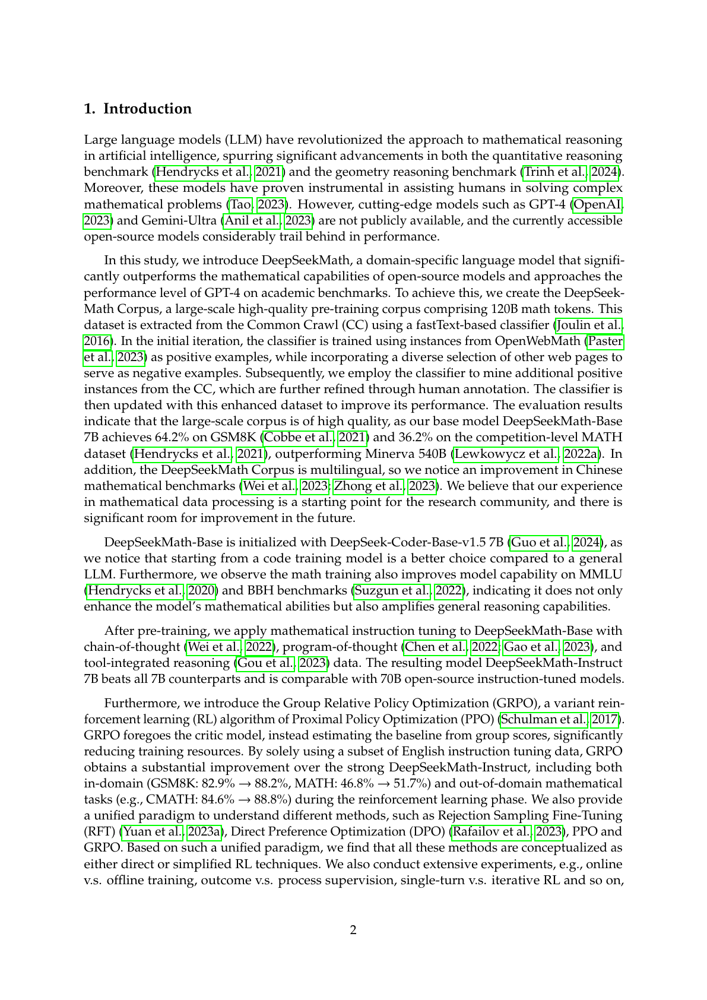
1.1 主要贡献
1.1.1 大规模数学预训练
- 证明公开 Common Crawl 包含有价值的数学信息。通过精心设计的数据选择流水线，构建来自数学网页的 1200 亿词元高质量 DeepSeekMath Corpus，规模约为 Minerva 数学网页的 7 倍、OpenWebMath 的 9 倍。
- DeepSeekMath-Base 7B 达到 Minerva 540B 的水平，说明参数量并非数学推理能力的唯一关键因素；在高质量数据上预训练的小模型也能取得强表现。
- 数学训练前先进行代码训练，可以提高有工具和无工具两种数学解题能力。这部分回答了“代码训练是否提高推理能力”的长期问题：至少对数学推理而言，答案是肯定的。
- 尽管许多数学工作普遍在 arXiv 论文上训练，但在本文采用的全部数学基准上，这类数据没有带来明显改善。
1.1.2 强化学习探索与分析
- 提出高效且有效的 GRPO。它省去评论家模型，以同组样本得分估计基线，相比 PPO 显著减少训练资源。
- 只使用指令微调数据，GRPO 就显著改善 DeepSeekMath-Instruct，且域外任务也得到提升。
- 提供统一范式理解 RFT、DPO、PPO、GRPO，并通过在线/离线、结果/过程监督、单轮/迭代强化学习等实验研究关键因素。
- 基于统一范式分析强化学习有效的原因，并总结更有效大模型强化学习的潜在方向。
1.2 评估与指标概览
中英文数学推理。 评估覆盖从小学到大学的数学问题。英文基准包括 GSM8K、MATH、SAT、OCW Courses 与 MMLU-STEM；中文基准包括 MGSM-zh、CMATH、Gaokao-MathCloze 与 Gaokao-MathQA。既评估无需工具生成自包含文字解答，也评估使用 Python 解题。
在英文基准上，DeepSeekMath-Base 可与闭源 Minerva 540B 竞争，并大幅超过全部开源基座模型，包括通用 Mistral 7B 和在 Proof-Pile-2 上数学预训练的 Llemma-34B。中文结果尤其突出，因为我们没有只收集英语数学预训练数据，而是纳入高质量非英语数据。经过数学指令微调与强化学习后，DeepSeekMath-Instruct 与 DeepSeekMath-RL 在开源社区中首次把竞赛级 MATH 准确率提高到 50% 以上。
形式化数学。 在 miniF2F 上使用 Isabelle，评估从非形式证明到形式证明的任务；DeepSeekMath-Base 表现出强大的少样本自动形式化能力。
自然语言理解、推理与代码。 使用覆盖 57 个学科选择题的 MMLU、包含 23 项多步推理任务的 BBH，以及代码基准 HumanEval 与 MBPP。数学预训练同时改善语言理解和推理。
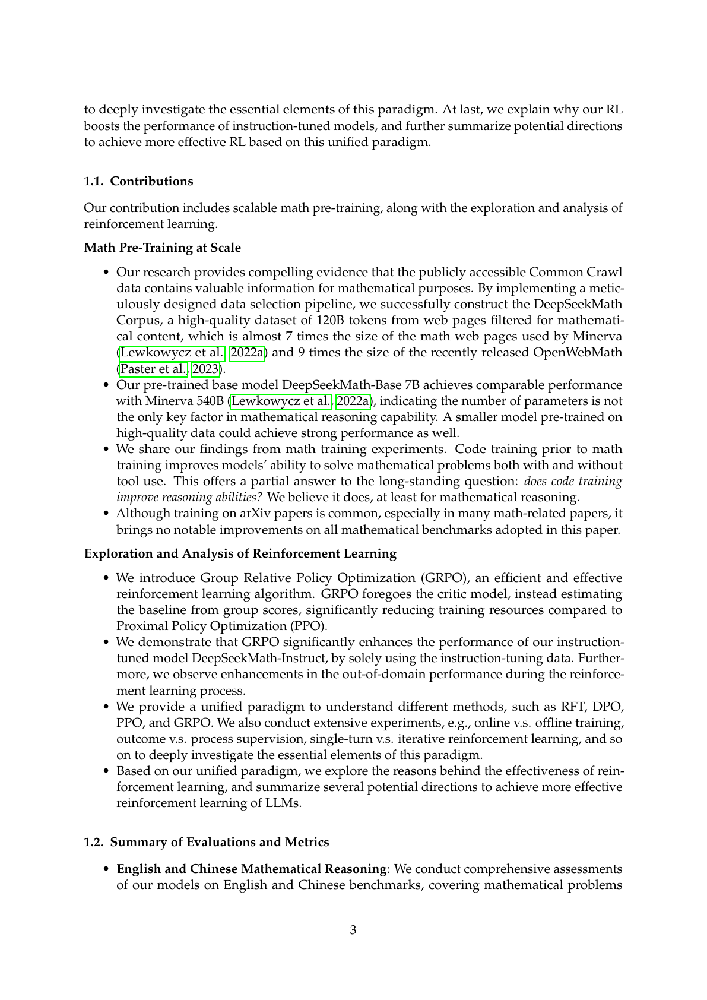
2 数学预训练
2.1 数据收集与去污染
我们从 Common Crawl 构建 DeepSeekMath Corpus。图 2 是一条迭代流水线：从一个小而高质量的数学种子语料开始，系统地收集大规模数学网页。该方法也可用于代码等其他领域。
首先选择高质量数学网页集合 OpenWebMath 作为种子语料。随机取 50 万条种子数据为正例，再从 Common Crawl 取 50 万网页为负例，训练 fastText 分类器。配置为向量维度 256、学习率 0.1、最大词 n-gram 长度 3、最小词频 3、训练 3 个周期。
为缩小原始 Common Crawl，使用基于 URL 的去重与近似去重，得到 400 亿个 HTML 网页；再用 fastText 召回数学网页。为过滤低质量数学内容，按分类器分数排序，只保留高分网页。通过在最高分的 400 亿、800 亿、1200 亿、1600 亿词元上预训练实验，评估应保留的数据量；第一轮选择最高分的 400 亿词元。
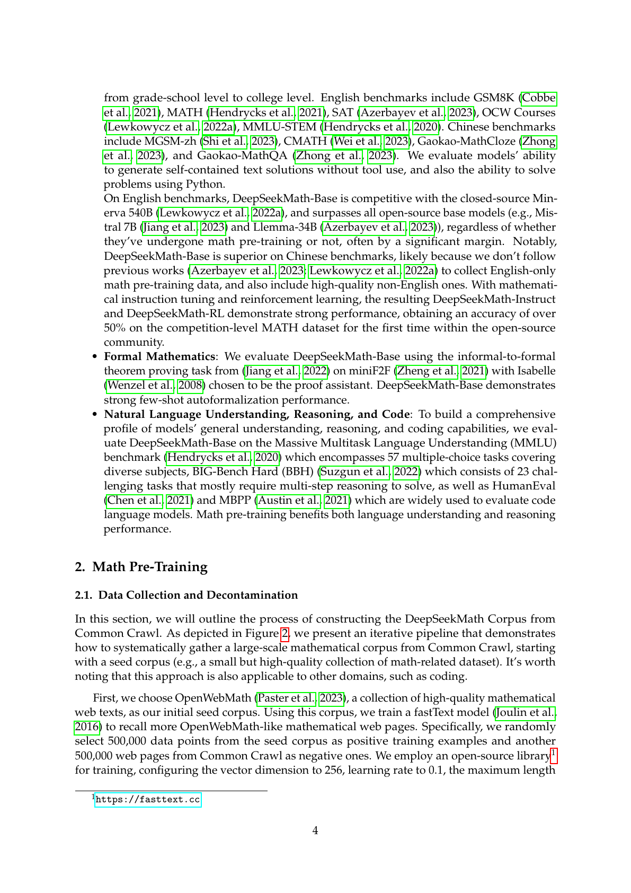
第一轮后仍有许多数学网页未收集，主要因为正例多样性不足。我们把整个 Common Crawl 按基础 URL 组织成互不重叠的域，并计算每个域在第一轮被收集的网页比例；超过 10% 的域被视为数学相关，例如 mathoverflow.net。随后人工标注这些域中与数学内容相关的 URL 路径，例如 mathoverflow.net/questions，并把这些路径下尚未收集的网页加入种子语料。更多正例使下一轮 fastText 能召回更多数学数据。四轮后得到 3550 万个数学网页，共 1200 亿词元；第四轮发现 98% 的数据第三轮已经收集，因此停止。
为避免基准污染，过滤含有 GSM8K、MATH、CMATH 与 AGIEval 问题或答案的网页。如果文本片段含有与评估基准任一子串完全相同的 10-gram，就从数学语料删除；若基准文本短于 10-gram 但不少于 3-gram，则使用精确匹配过滤。
图 2：从 Common Crawl 收集数学网页的迭代流水线。 先训练 fastText，召回数学网页，再发现数学相关域并由标注者标注 URL 路径，从而扩充种子、进入下一轮。
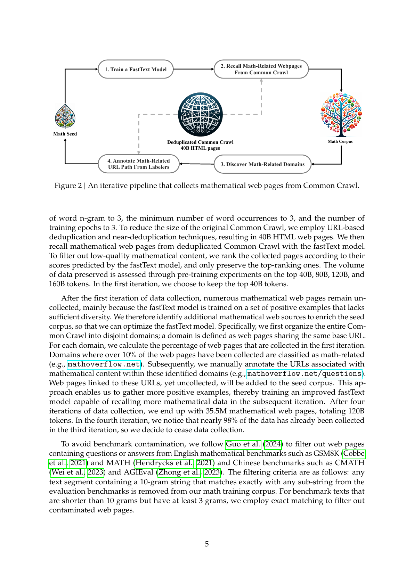
2.2 DeepSeekMath Corpus 质量验证
比较三类近期数学训练语料：MathPile 是由教材、Wikipedia、ProofWiki、Common Crawl、StackExchange 与 arXiv 聚合的 89 亿词元多源语料，超过 85% 来自 arXiv；OpenWebMath 是从 Common Crawl 筛选的 136 亿数学词元；Proof-Pile-2 由 OpenWebMath、103 亿词元数学代码 AlgebraicStack 与 280 亿词元 arXiv 论文组成，实验采用 arXiv:网页:代码 = 2:4:1。
2.2.1 训练设置
在 13 亿参数、与 DeepSeek LLM 框架相同的通用预训练模型 DeepSeek-LLM 1.3B 上进行数学训练。每个语料分别训练 1500 亿词元。实验使用 HAI-LLM；优化器为 AdamW，$\beta_1=0.9$、$\beta_2=0.95$、weight_decay=0.1。学习率经 2000 步预热达到峰值，在训练 80% 时降到峰值的 31.6%，90% 时降到 10%；最大学习率 $5.3\times10^{-4}$，批量大小 400 万词元，上下文长度 4K。
2.2.2 评估结果
DeepSeekMath Corpus 质量高、覆盖多语言数学内容，而且规模最大。
- 高质量。 在八项数学基准上使用少样本思维链评估，表 1 中 DeepSeekMath Corpus 明显领先；图 3 还显示，训练到 500 亿词元时，它已优于完整一轮 Proof-Pile-2，说明平均质量更高。
- 多语言。 数据以英语和中文为主，也包含其他语言；它同时改善中英文数学推理。以英语为中心的既有语料对中文改善有限，甚至可能有害。
- 大规模。 语料比现有数学语料大数倍。DeepSeekMath 曲线更陡、持续改善更久；较小基线语料在训练中重复多轮，很快到达平台。
表 1：DeepSeek-LLM 1.3B 在不同数学语料上的表现。 使用少样本思维链；语料规模按 100K 词表分词器计算。
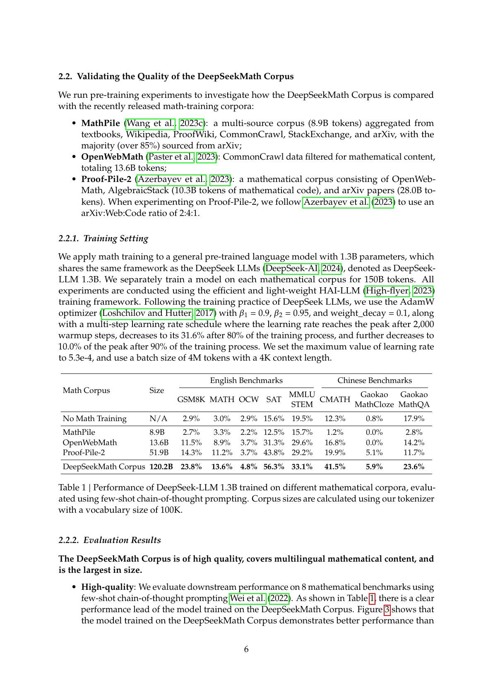
图 3：DeepSeek-LLM 1.3B 在不同数学语料上的基准曲线。
2.3 训练与评估 DeepSeekMath-Base 7B
DeepSeekMath-Base 7B 从 DeepSeek-Coder-Base-v1.5 7B 初始化，继续训练 5000 亿词元。数据分布为：56% DeepSeekMath Corpus、4% AlgebraicStack、10% arXiv、20% GitHub 代码、10% 来自 Common Crawl 的中英自然语言。训练基本沿用 2.2.1 节，但最大学习率改为 $4.2\times10^{-4}$，批量大小 1000 万词元。
评估关注无需工具生成自包含数学解、借助工具解题和形式定理证明；还考察自然语言理解、推理与编程。
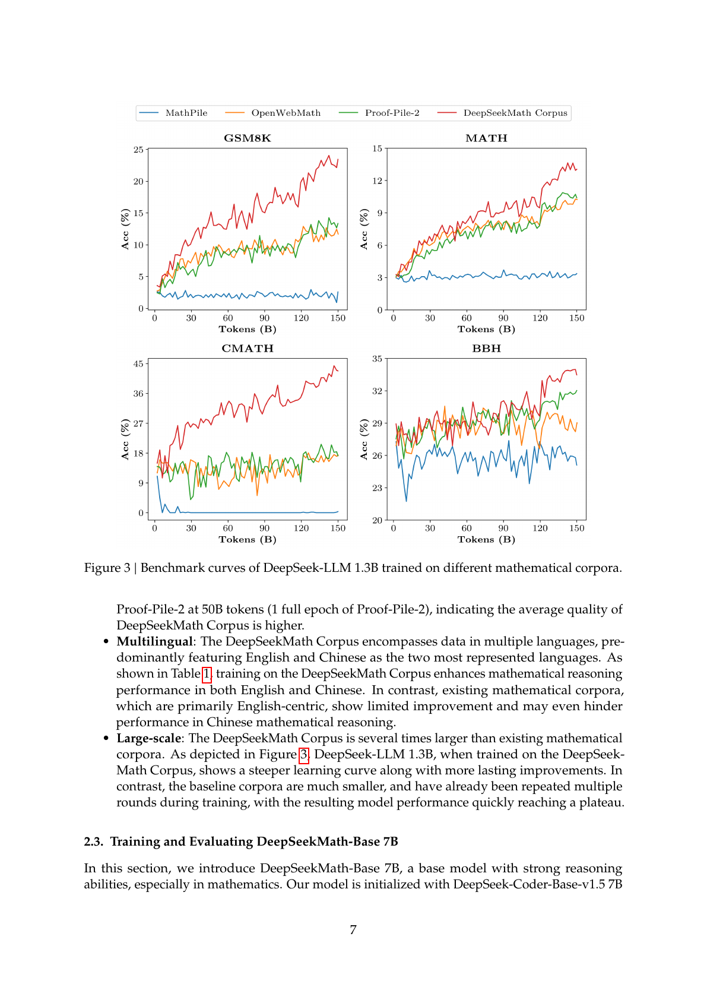
2.3.1 逐步推理数学解题
使用少样本思维链在八项中英文基准上评估，覆盖定量推理与选择题，难度从小学到大学。表 2 显示，在开源基座模型中，DeepSeekMath-Base 7B 在八项上全部领先；在竞赛级 MATH 上，相对既有开源基座绝对提高超过 10 个百分点，并超过参数量大 77 倍、建立在 PaLM 之上再做数学训练的闭源 Minerva 540B。
表 2：DeepSeekMath-Base 7B 与强基座模型在中英文数学基准上的比较。 使用思维链提示。
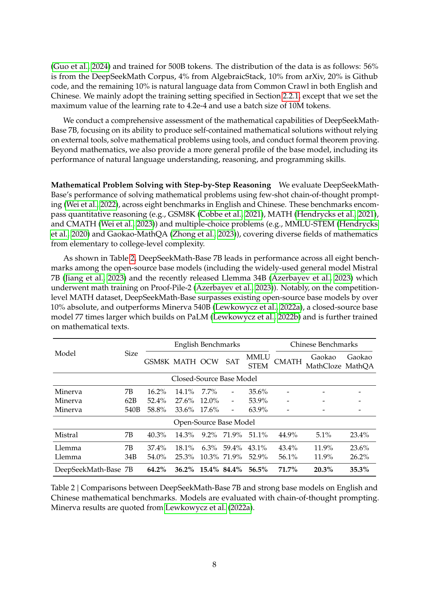
2.3.2 使用工具的数学解题
在 GSM8K 与 MATH 上使用少样本程序思维提示，要求模型编写 Python 程序，并可调用 math、sympy 完成复杂计算；程序执行结果作为答案。DeepSeekMath-Base 7B 超过此前最佳 Llemma 34B。
2.3.3 形式化数学
形式证明自动化可保证证明准确可靠并提升效率。我们在 miniF2F 上评估从非形式到形式证明的任务：输入非形式陈述、对应形式陈述与非形式证明，生成 Isabelle 形式证明。模型先生成证明草图，再调用现成自动证明器 Sledgehammer 补充细节。结果显示 DeepSeekMath-Base 7B 具有很强的证明自动形式化能力。
表 3：基座模型使用工具解数学题及在 Isabelle 中进行非形式到形式证明的少样本结果。
2.3.4 自然语言理解、推理与代码
使用 MMLU 评估自然语言理解、BBH 评估推理、HumanEval 与 MBPP 评估编程。相较 DeepSeek-Coder-Base-v1.5，DeepSeekMath-Base 7B 在 MMLU 与 BBH 上显著增强，说明数学训练有益于语言理解和推理；继续训练中保留代码词元，也有效维持前代在两项代码基准上的表现。整体而言，它在三项推理和代码基准上明显超过通用 Mistral 7B。
表 4：自然语言理解、推理和代码结果。 DeepSeek-Coder-Base-v1.5† 是学习率衰减前、用于训练 DeepSeekMath-Base 的检查点。
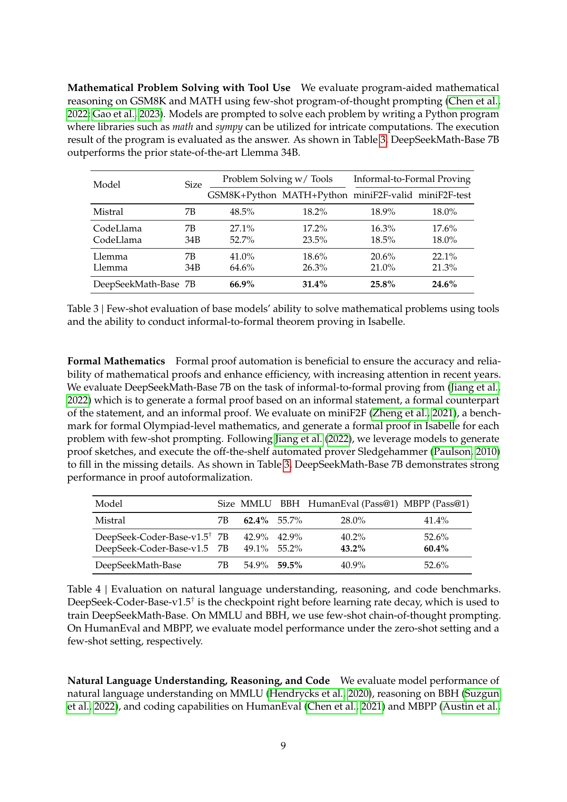
3 监督微调
3.1 SFT 数据整理
构建数学指令数据集，覆盖不同领域、不同复杂度的中英文问题，并为问题配对思维链、程序思维与工具集成推理解答，总计 77.6 万条训练样例。
- 英文数学数据。 为 GSM8K、MATH 标注工具集成解答，并采用 MathInstruct 子集和 Lila-OOD 训练集，其中问题以思维链或程序思维求解；覆盖代数、概率、数论、微积分与几何等领域。
- 中文数学数据。 收集覆盖 76 个子主题的 K-12 问题，例如线性方程，并同时标注思维链与工具集成推理解答。
3.2 训练与评估 DeepSeekMath-Instruct 7B
在 DeepSeekMath-Base 上做数学指令微调。训练样例随机拼接到最长 4K 词元；批量大小 256、恒定学习率 $5\times10^{-5}$，训练 500 步。
在中英文四项定量推理基准上，分别评估无工具与有工具数学能力。闭源比较对象包括 GPT 系列、Gemini Ultra/Pro、Inflection-2、Grok-1、Baichuan-3 与 GLM-4；开源对象包括 DeepSeek-LLM-Chat 67B、Qwen 72B、SeaLLM-v2 7B、ChatGLM3 6B，以及经过数学增强的 InternLM2-Math 20B、Math-Shepherd-Mistral 7B、WizardMath、MetaMath 70B、ToRA 34B 与 MAmmoTH 70B。
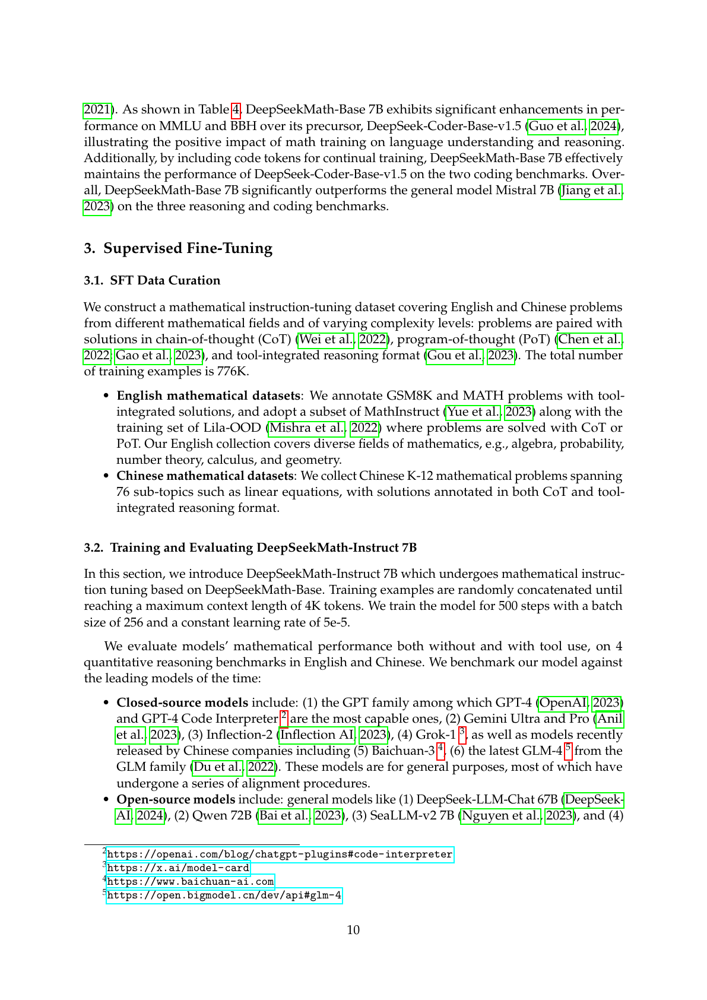
无工具设置下，DeepSeekMath-Instruct 7B 展现很强的逐步推理。在竞赛级 MATH 上，它至少领先全部开源模型与大多数专有模型 9 个百分点，包括规模大得多的 Qwen 72B 和通过数学强化学习增强的 WizardMath-v1.1 7B。它与 GLM-4、Baichuan-3 相当，但仍落后 GPT-4 与 Gemini Ultra。
允许结合自然语言推理和程序工具后，它在 MATH 上接近 60%，超过全部现有开源模型；其他基准上也能与大十倍的 DeepSeek-LLM-Chat 67B 竞争。
4 强化学习
4.1 组相对策略优化
强化学习已经证明能够在 SFT 后进一步提高数学推理。本节提出高效有效的 GRPO。
4.1.1 从 PPO 到 GRPO
PPO 是大模型强化微调广泛使用的行动者-评论家算法，通过最大化下列代理目标优化语言模型：
$\pi_\theta$ 与 $\pi_{\theta_{old}}$ 是当前和旧策略，$q,o$ 是问题与旧策略生成的输出；$\epsilon$ 是稳定训练的裁剪超参数。优势 $A_t$ 基于奖励与学习得到的价值函数 $V_\psi$，通过广义优势估计计算。PPO 需要与策略模型同时训练价值函数；为防止奖励过优化，标准做法还会在每个词元奖励中加入相对参考模型的 KL 惩罚：
价值函数通常是与策略模型规模相当的另一个模型，带来显著内存和计算负担。它在 RL 中充当优势计算的基线；但大模型奖励模型通常只在最后一个词元给出得分，训练每个词元都准确的价值函数会很困难。
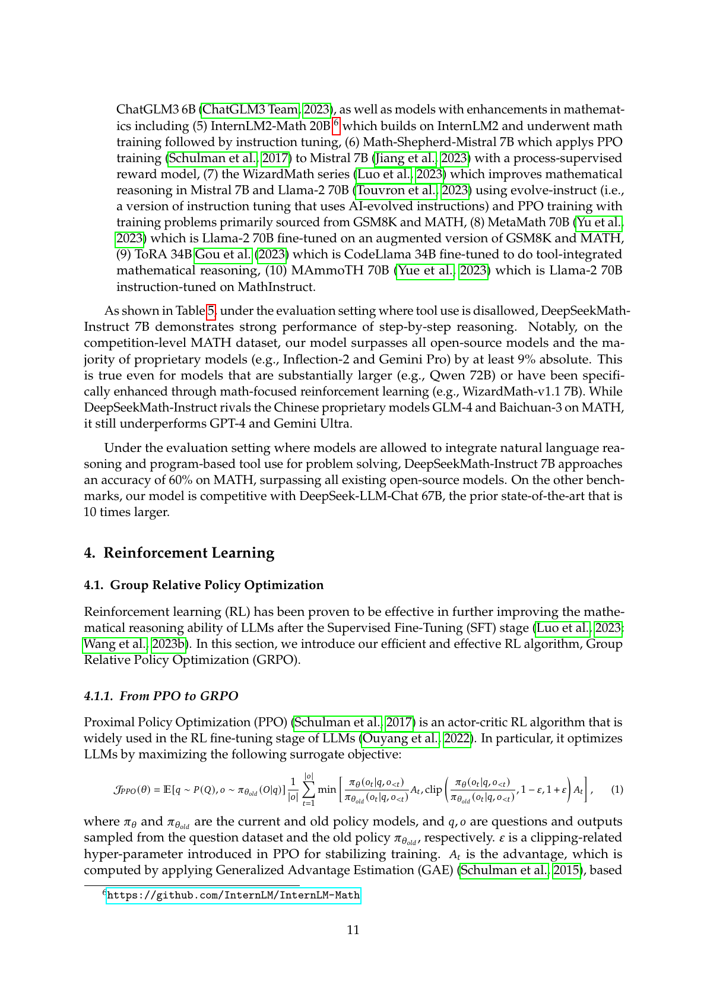
表 5：开源和闭源模型在中英文基准上的思维链与工具集成推理。 灰色分数是 32 个候选的多数投票，其余为 Top-1。DeepSeekMath-RL 7B 超过从 7B 到 70B 的全部开源模型与大多数闭源模型。
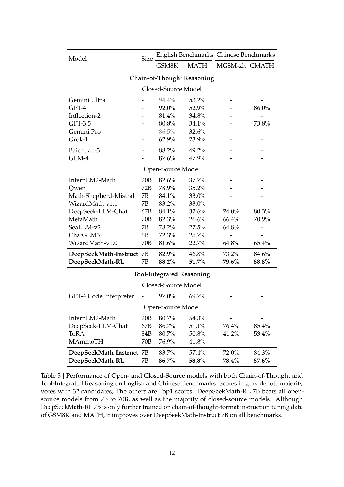
为此，GRPO 不再额外近似价值函数，而把同一问题的多个采样输出的平均奖励作为基线。对每个问题 $q$，从旧策略采样一组 $\{o_1,\ldots,o_G\}$，并最大化：
其中 $\rho_{i,t}=\pi_\theta(o_{i,t}\mid q,o_{i,<t})/\pi_{\theta_{old}}(o_{i,t}\mid q,o_{i,<t})$。$\hat A_{i,t}$ 只根据同组输出的相对奖励计算。组相对优势与奖励模型的比较性质一致，因为奖励模型通常由同一问题不同输出之间的比较训练。GRPO 直接把训练策略与参考策略的 KL 散度加入损失，而不是加入奖励，避免复杂化优势计算。KL 使用保证为正的无偏估计：
图 4：PPO 与 GRPO。 GRPO 省去价值模型，改为从同组分数估计基线，显著减少训练资源。
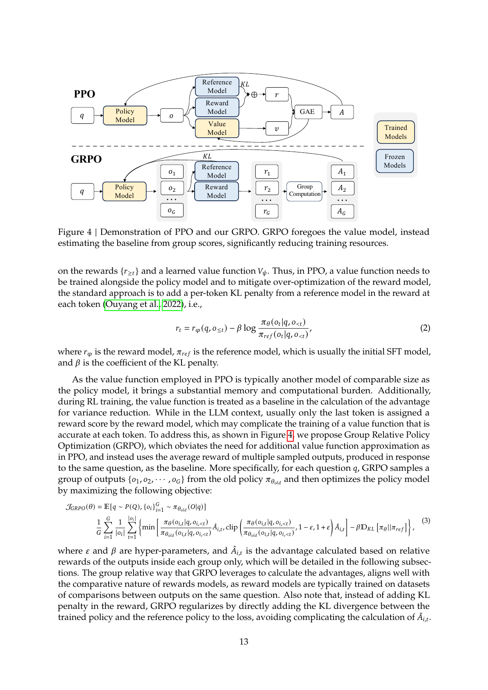
4.1.2 使用 GRPO 的结果监督强化学习
对每个问题，从旧策略采样一组输出，由奖励模型得到对应奖励 $\{r_1,…,r_G\}$，再减去组平均、除以组标准差进行归一化。结果监督只在每个输出末尾给出归一化奖励，并把该输出所有词元的优势都设为 $\hat A_{i,t}=\tilde r_i=(r_i-\operatorname{mean}(\mathbf r))/\operatorname{std}(\mathbf r)$，随后最大化式（3）。
4.1.3 使用 GRPO 的过程监督强化学习
结果监督只在输出末尾给奖励，面对复杂数学任务可能不够充分、高效。过程监督则在每个推理步骤末尾给奖励。过程奖励模型为各输出的每一步打分，全部奖励按总体平均与标准差归一化；每个词元的优势等于其后所有步骤归一化奖励之和，再最大化式（3）。
4.1.4 使用 GRPO 的迭代强化学习
训练推进后，旧奖励模型可能不足以监督当前策略。迭代 GRPO 根据当前策略采样结果生成新的奖励模型训练集，并用包含 10% 历史数据的回放机制持续训练奖励模型；再把当前策略设为参考模型，使用新奖励模型继续训练策略。
算法 1：迭代组相对策略优化。 每轮先更新参考模型；每步采样问题批次，用旧策略为每个问题生成 $G$ 个输出，由奖励模型打分、计算组相对优势，再最大化 GRPO 目标更新策略；最后通过回放持续更新奖励模型。
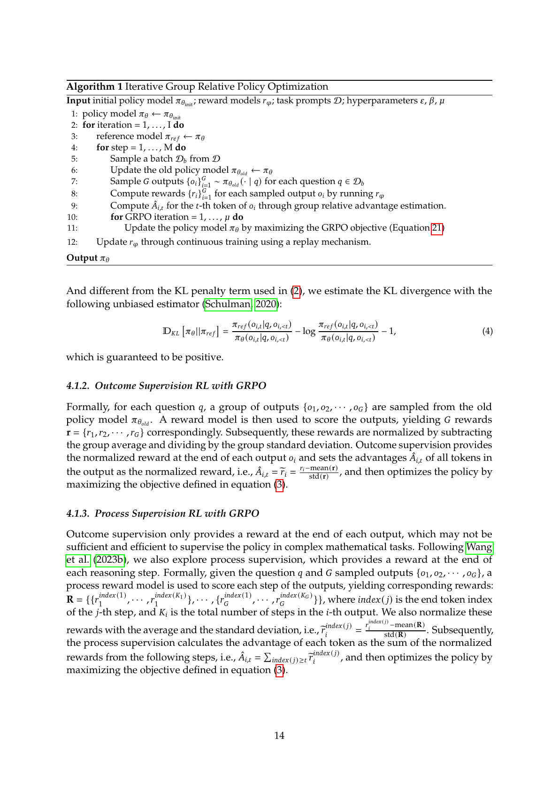
4.2 训练与评估 DeepSeekMath-RL
从 DeepSeekMath-Instruct 7B 开始强化学习。数据只使用 SFT 数据中与 GSM8K、MATH 相关的思维链问题，约 14.4 万条；特意排除其他问题，以研究 RL 阶段完全没有数据的基准会如何变化。奖励模型训练集沿用既有方法；初始奖励模型从 DeepSeekMath-Base 7B 开始，学习率 $2\times10^{-5}$。GRPO 策略学习率 $10^{-6}$、KL 系数 0.04，每个问题采样 64 个输出，最大长度 1024，训练批量 1024；每个探索阶段后只更新策略一次。
GSM8K、MATH 的思维链任务视为域内，其他基准均为域外。结果表明：第一，DeepSeekMath-RL 7B 在 GSM8K 与 MATH 上达到 88.2% 与 51.7%，超过全部 7B–70B 开源模型和大多数闭源模型；第二，它只用 GSM8K、MATH 思维链数据，却在全部指标上超过起点 DeepSeekMath-Instruct，证明强化学习有效。
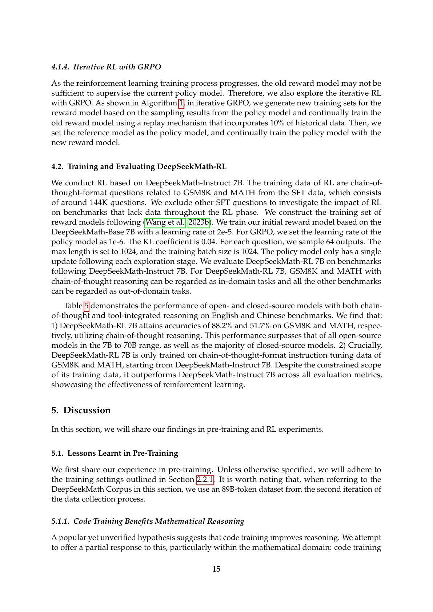
5 讨论
5.1 预训练经验
除非另有说明，本节沿用 2.2.1 节训练设置；提到 DeepSeekMath Corpus 时使用第二轮收集得到的 890 亿词元版本。
5.1.1 代码训练有益于数学推理
一个流行但未验证的假设认为代码训练可以改善推理。我们的实验给出数学领域的部分答案：代码训练同时改善有工具与无工具数学推理。
比较两阶段与单阶段设置。两阶段包括“4000 亿代码词元后再训练 1500 亿数学词元”，以及控制实验“4000 亿通用词元后再训练 1500 亿数学词元”。单阶段包括只训练 1500 亿数学词元，以及混合 4000 亿代码与 1500 亿数学词元；后者用于研究能否既提高数学推理又减轻两阶段训练造成的灾难性遗忘。
结果显示，代码训练在两阶段和单阶段设置下都有益于程序辅助数学推理。两阶段中，单独代码训练已经显著提高用 Python 解 GSM8K、MATH 的能力，随后数学训练进一步改善。单阶段混合代码和数学，则有效缓解两阶段的灾难性遗忘，并同时促进编程与程序辅助数学推理。
表 6：不同训练设置下代码对数学推理的影响。 使用 DeepSeek-LLM 1.3B，分别以少样本思维链和程序思维评估无工具与有工具解题。
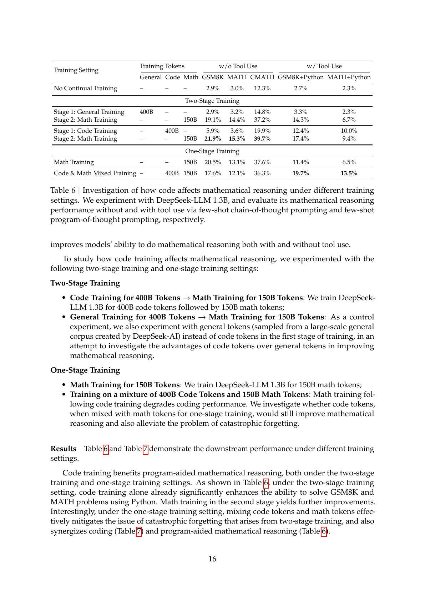
代码训练也能改善无需工具的数学推理。两阶段中，代码训练第一阶段已带来中等提升，并提高后续数学训练效率，最终表现最好。但单阶段混合代码与数学会损害无工具数学推理；一种推测是 1.3B 模型容量有限，无法同时充分吸收代码与数学数据。
表 7：代码/数学训练设置对语言理解、推理与代码的影响。
5.1.2 arXiv 论文似乎不能改善数学推理
arXiv 论文经常被纳入数学预训练数据，但其影响缺少详细分析。反直觉的是，实验显示 arXiv 论文似乎不能改善数学推理。我们在 DeepSeek-LLM 1.3B 与 DeepSeek-Coder-Base-v1.5 7B 上测试两类 arXiv 语料：MathPile 是经启发式清洗过滤的 89 亿词元语料，其中超过 85% 是 arXiv 科学论文；ArXiv-RedPajama 是去除导言、注释、宏和参考文献后的全部 arXiv LaTeX 文件，共 280 亿词元。
在每种语料上分别训练 1.3B 模型 1500 亿词元、7B 模型 400 亿词元。两种模型在 GSM8K、MATH、MMLU-STEM 与 miniF2F 等不同复杂度基准上都没有明显改善，甚至退化。
这一结论有限，应谨慎看待。尚未研究 arXiv 对本文未覆盖的特定任务，例如把形式陈述或证明转为非形式版本；与其他数据混合时的效果；以及更大模型规模下是否才显现收益。未来仍需进一步探索。
表 8：不同 arXiv 数据上数学训练的影响。
表 9：不同 arXiv 语料对 Isabelle 非形式到形式证明的影响。
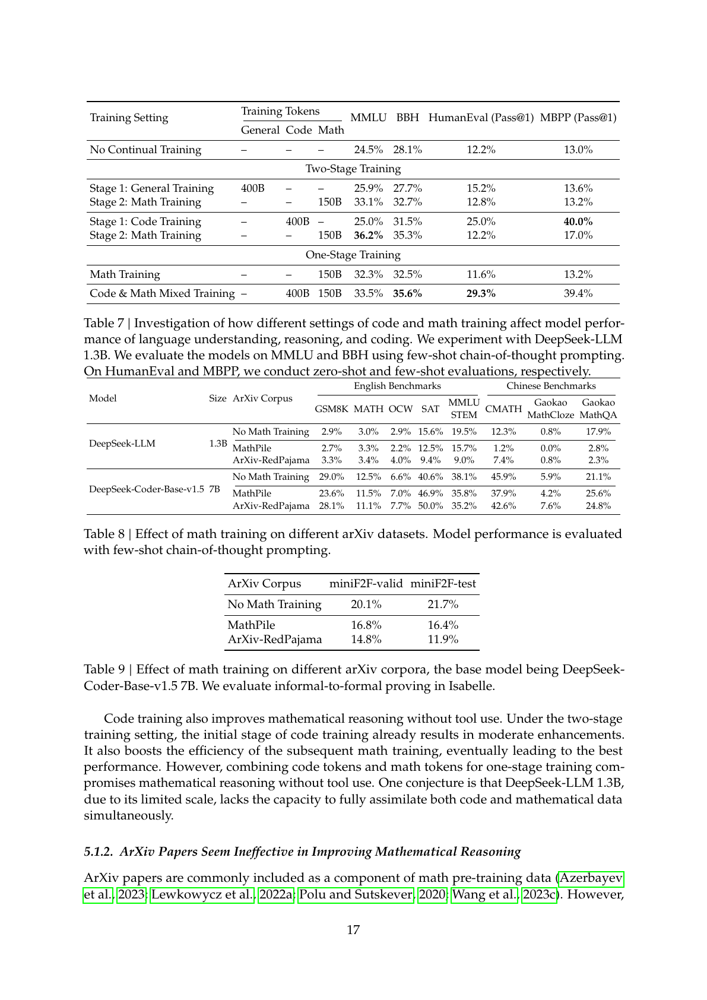
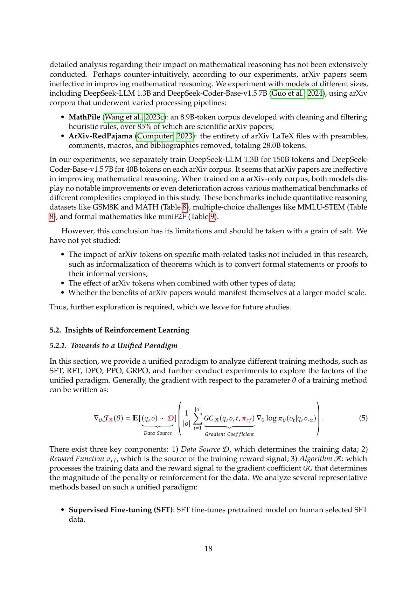
5.2 强化学习洞见
5.2.1 迈向统一范式
我们用统一范式分析 SFT、RFT、DPO、PPO、GRPO。任一训练方法关于参数 $\theta$ 的梯度可写为：
它包含三个关键组成：数据源 $D$ 决定训练数据；奖励函数 $\pi_{rf}$ 是奖励信号来源；算法 $A$ 把数据与奖励处理成梯度系数 $GC$，决定对数据惩罚或强化的幅度。
- SFT： 在人工选择的 SFT 数据上微调预训练模型。
- RFT： 对 SFT 问题从 SFT 模型采样输出，按答案正确性过滤，再继续微调。
- DPO： 从 SFT 模型采样增强输出，使用成对 DPO 损失继续微调。
- 在线 RFT： 不从固定 SFT 模型采样，而从实时策略模型采样并微调。
- PPO/GRPO： 用 SFT 模型初始化策略，再用实时策略采样的输出进行强化。
表 10：不同方法的数据源与梯度系数。
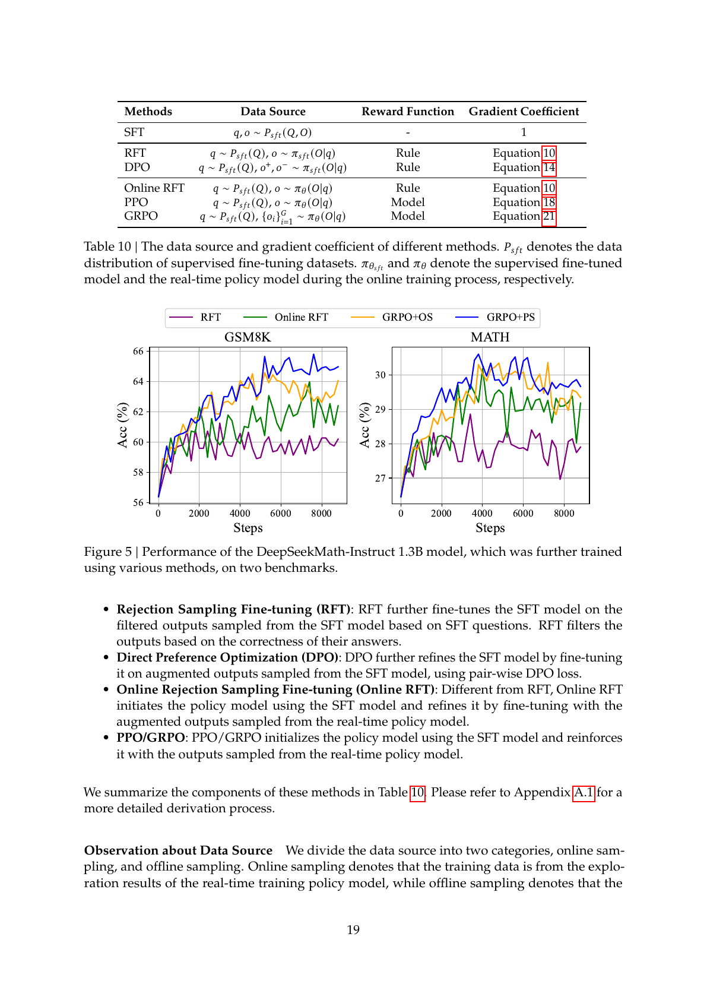
数据源观察。 数据源可分为在线采样和离线采样。在线采样使用实时策略的探索结果，离线采样使用初始 SFT 模型结果。RFT、DPO 属于离线，在线 RFT、GRPO 属于在线。图 5 显示，在线 RFT 在两个基准上明显超过 RFT：早期两者相近，因为策略与 SFT 模型仍相似；后期策略产生的数据差异更大，实时采样优势显现。
梯度系数观察。 算法把奖励处理成梯度系数。奖励函数可分为规则和模型：规则按答案正确性判断，模型则是基于规则数据训练的奖励模型。GRPO 与在线 RFT 的关键区别是，GRPO 根据奖励值大小调节梯度系数，对不同响应施加不同强度的强化和惩罚；在线 RFT 不惩罚错误回答，并以相同强度强化全部正确回答。
图 5 显示 GRPO 超过在线 RFT，证明正负梯度系数变化有效；GRPO+PS 又超过 GRPO+OS，说明细粒度、步骤感知的梯度系数有益。两轮迭代强化学习还显著改善表现，第一轮提升尤其明显。
图 5：DeepSeekMath-Instruct 1.3B 使用不同方法继续训练后的表现。
图 6：DeepSeekMath-Instruct 7B 迭代强化学习表现。
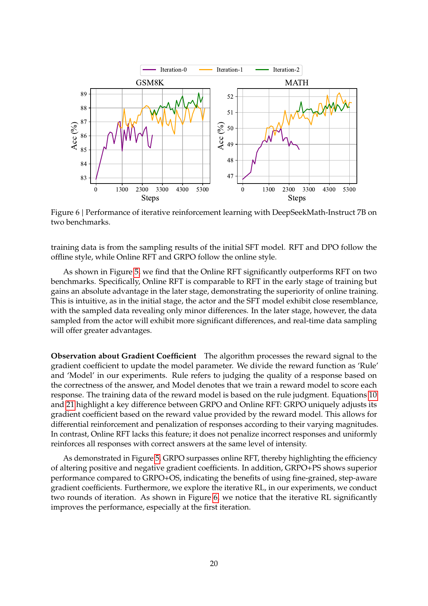
5.2.2 强化学习为何有效
本文仅用部分指令数据进行强化学习，仍显著提高指令模型。为解释原因，我们比较 Instruct 与 RL 模型在 GSM8K、MATH 上的 Pass@K 与 Maj@K。图 7 显示，RL 提升 Maj@K，却没有提升 Pass@K。这说明强化学习通过使输出分布更稳健来提高整体表现；换言之，改进似乎来自把 Top-K 中的正确响应推到更高位置，而不是增强基础能力。既有工作也发现 SFT 模型在推理任务上存在错位，可通过偏好对齐提高表现。
图 7：SFT 与 RL DeepSeekMath 7B 的 Maj@K、Pass@K。 温度 0.7；RL 提升 Maj@K，但不提升 Pass@K。
5.2.3 如何实现更有效的强化学习
统一范式包含数据源、算法、奖励函数三个关键组成，分别对应以下方向。
数据源。 强化学习中的原材料，是无标签问题与策略采样输出。本文只使用指令阶段问题，并用朴素核采样生成输出，这可能是 RL 只改善 Maj@K 的原因。未来将探索分布外问题提示与树搜索等高级采样/解码策略。决定策略探索效率的高效推理技术也极为重要。
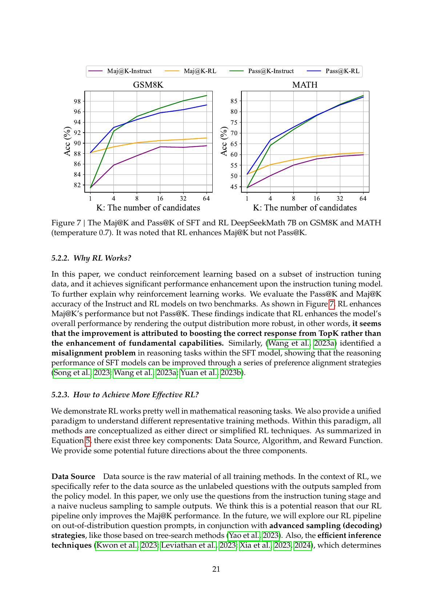
算法。 算法把数据与奖励信号处理成梯度系数。现有方法在某种程度上都完全信任奖励函数信号，按其增减特定词元的条件概率；但复杂任务中无法保证奖励总可靠。即使由训练有素标注者精心标注的 PRM800K，也约有 20% 错误标注。因此需要探索对噪声奖励鲁棒的强化学习算法；我们认为这种弱到强对齐会给学习算法带来根本变化。
奖励函数。 奖励模型有三个重要方向：第一，提高泛化，使其能够处理分布外问题与高级解码输出，否则 RL 可能只稳定大模型分布而不能增强基础能力；第二，反映奖励模型不确定性，它可能成为弱奖励模型与弱到强学习算法之间的桥梁；第三，高效构建高质量过程奖励模型，为推理过程提供细粒度信号。
6 结论、局限与未来工作
DeepSeekMath 在竞赛级 MATH 上超过全部开源模型并接近闭源模型。它从 DeepSeek-Coder-v1.5 7B 初始化，继续训练 5000 亿词元，其中包含从 Common Crawl 获取的 1200 亿数学词元。大量消融显示，网页蕴藏高质量数学数据的巨大潜力，而 arXiv 可能不如预期有益。我们提出 GRPO，它以更低内存占用显著提高数学推理，即使 DeepSeekMath-Instruct 7B 已达到很高基准分数仍然有效。统一范式还帮助总结更有效强化学习的方向。
DeepSeekMath 在定量推理上成绩突出，但几何和定理证明仍弱于闭源模型。初步测试中，它无法处理三角形、椭圆相关问题，可能说明预训练和微调的数据选择存在偏差。受模型规模限制，它的少样本能力也弱于 GPT-4：GPT-4 能从少样本输入获益，而 DeepSeekMath 零样本与少样本表现相近。未来将进一步改进数据选择流水线、构建更多高质量预训练语料，并探索 5.2.3 节的强化学习方向。
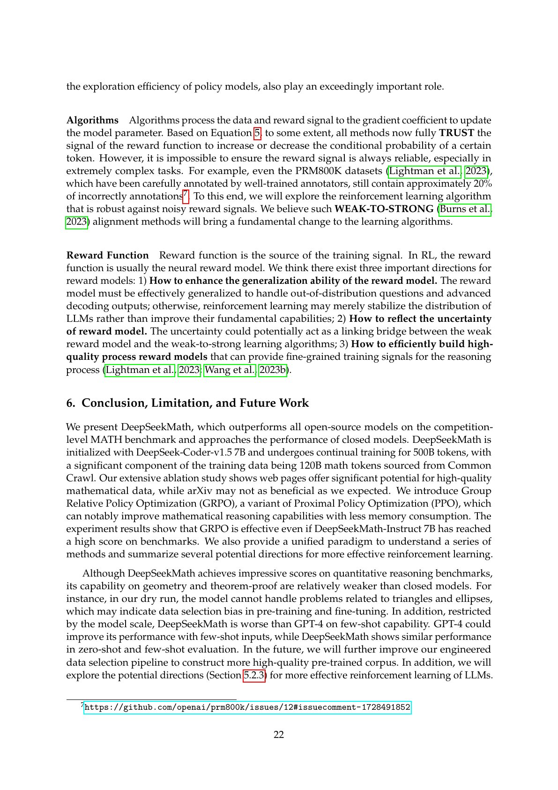
参考文献
原论文参考文献共五页。为完整保留作者、题名、出版信息与链接，以下按 PDF 原始页序收录。
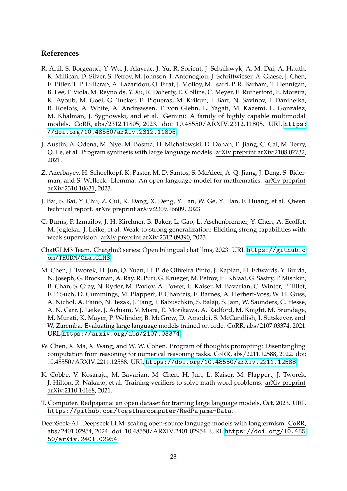
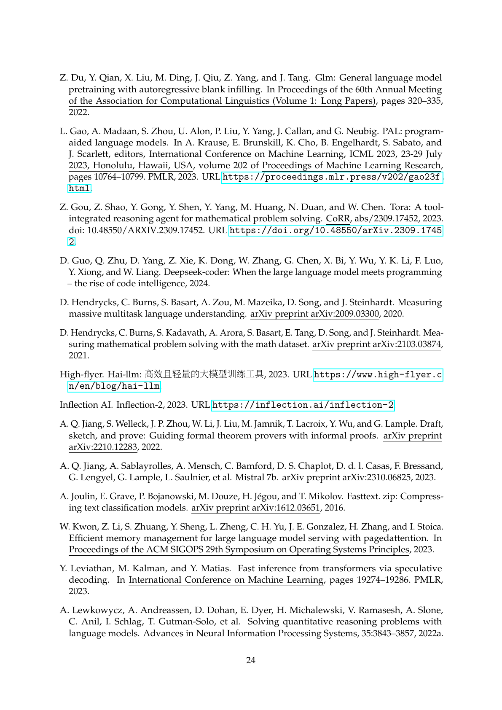
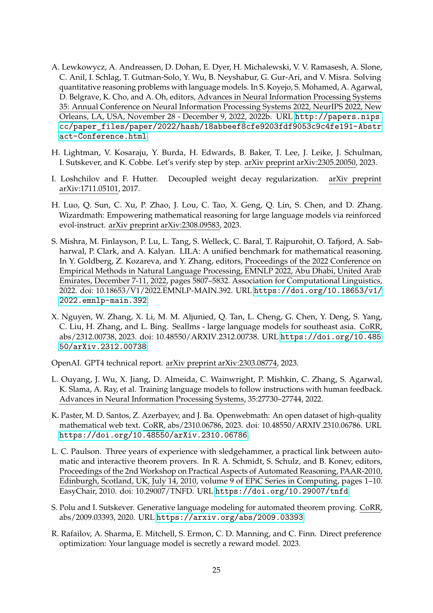
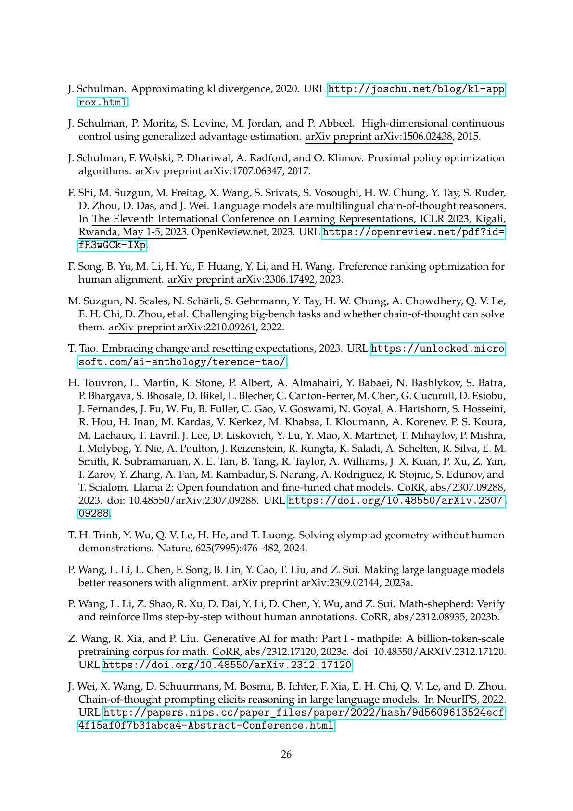
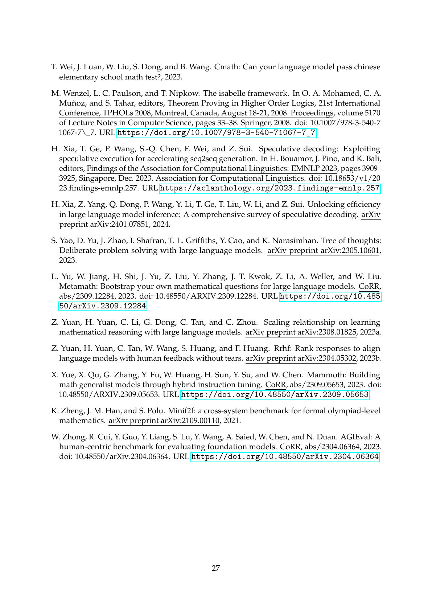
附录 A：强化学习分析
附录详细推导 SFT、RFT、在线 RFT、DPO、PPO、GRPO 的数据源和梯度系数，也就是算法与奖励函数如何共同决定梯度。
A.1 监督微调
SFT 最大化训练输出的平均对数似然：
对应梯度是各词元对数概率梯度的平均。数据源为 SFT 数据集，奖励可视为人工选择，梯度系数恒为 1。
A.2 拒绝采样微调
RFT 先为每个问题从 SFT 模型采样多个输出，再只用答案正确的输出训练：
数据源是 SFT 问题与 SFT 模型采样输出；奖励函数是答案是否正确的规则；正确输出梯度系数为 1，错误为 0。
A.3 在线拒绝采样微调
在线 RFT 唯一不同是输出来自实时策略 $\pi_\theta$，而非固定 SFT 模型；其梯度形式相同，但采样分布随策略更新。
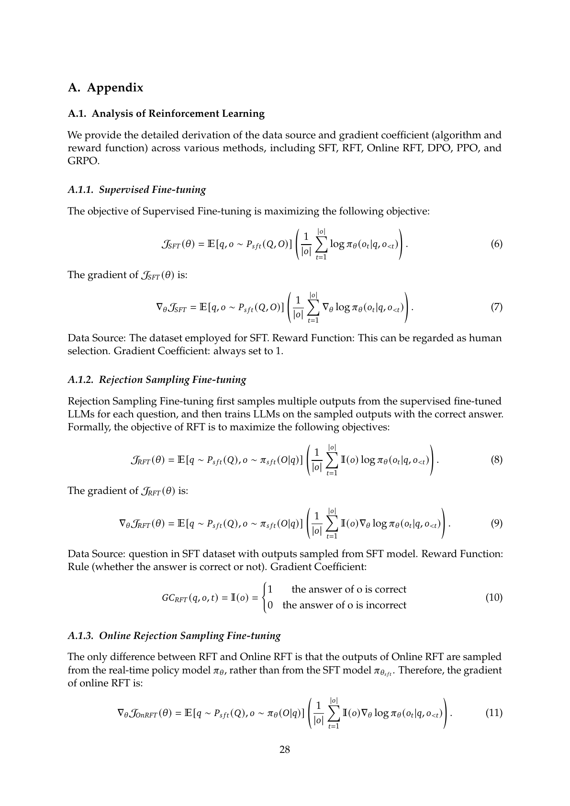
A.4 直接偏好优化
DPO 使用同一问题的偏好输出 $o^+$ 与拒绝输出 $o^-$，最大化相对参考策略的成对偏好目标。数据来自 SFT 问题和 SFT 模型采样输出；通用领域奖励为人类偏好，数学任务可使用规则；梯度系数由偏好/拒绝输出相对参考模型的对数概率差经 Sigmoid 得到，详见原文式（12）至（14）。
A.5 近端策略优化
PPO 目标见式（15）。为简化分析，假设每个探索阶段后只更新一次，使 $\pi_{\theta_{old}}=\pi_\theta$，从而可以去掉 min 与裁剪，梯度写为：
数据来自 SFT 问题与策略模型采样输出，奖励函数是奖励模型，梯度系数为由奖励和价值函数经 GAE 得到的优势 $A_t$。
A.6 组相对策略优化
在同样的单次更新假设下，GRPO 对同一问题采样 $G$ 个输出，以组奖励计算 $\hat A_{i,t}$，并加入参考策略 KL 正则。其梯度为：
数据源是 SFT 问题与策略模型采样输出，奖励函数是奖励模型；梯度系数由组奖励优势与 KL 正则共同构成，详见式（21）。
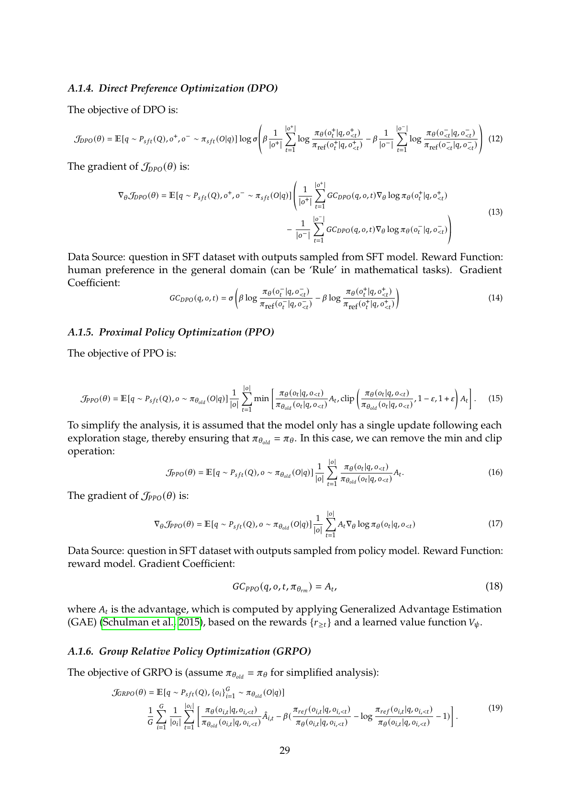
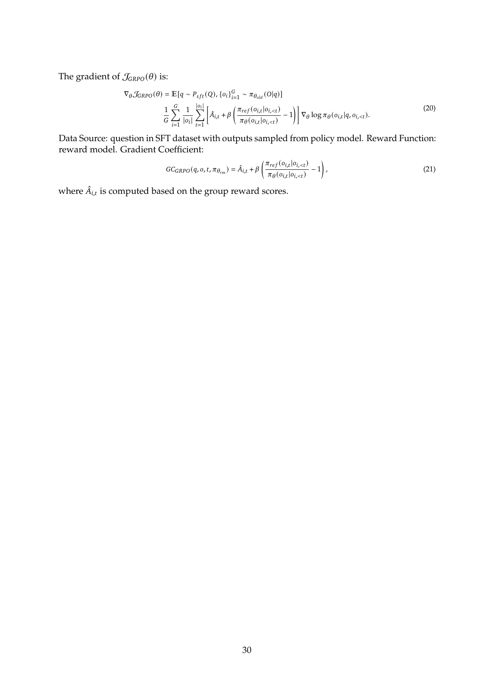